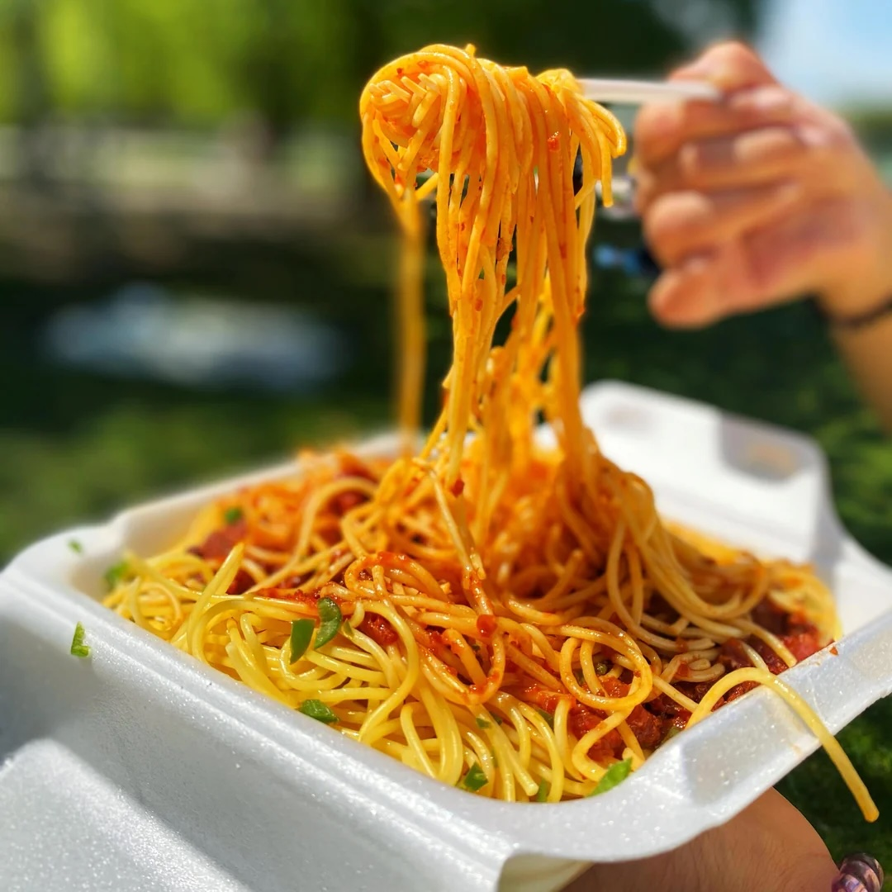

about page
Instructable Plan
Topic: How to make spaghetti

13 steps,
- Cut onion
- Saute the onion with the any oil
- Add Berbere and saute with onion and the oil
- Add Berbere and saute with onion and the oil
- And add tomato
- And we add the Vegeta all purpose seasoning (two spoonful)
- We wait for 10 minutes
- Boil water for the noodles
- Add salt and oil in to the boiling water
- And we put the noodles (spaghetti)
- And boil noodle(spaghetti) until al dente
- Finally strain noodle from the water
- Mix the sauce with the noodle
home page
gallery page